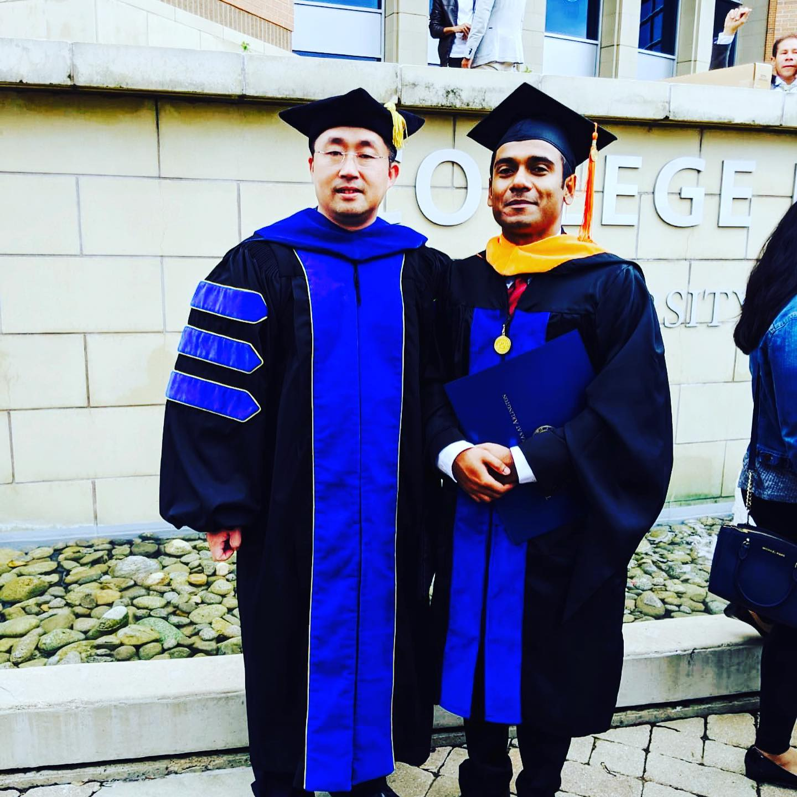

Me, and my journey so far...
India is a nation of diversified culture, traditions, languages, and dialects. Born into a traditional Bengali family, I attended a Catholic institution in Kolkata throughout, for my studies and my love and passion for computers started way back. My father bought a personal computer for the first time for my elder brother only doubled my excitement and eagerness. As my seven-year-old brain could not fathom the exact meaning of the phrase ‘Intel Inside’, printed on top of the box, I spent the next few hours trying to locate ‘Intel’ inside the box. This curiosity laid the foundation for my interest in computers. After my schooling, I joined PSG College of Technology, Coimbatore, for my Bachelor of Engineering in Computer Science and Engineering.
I believe that the success of a project depends on its practical applications, rather than just its academic merits. And so, I began doing projects from the very first year itself. My first project was a ‘Line and Grid Follower Robot’, where the robot could follow a particular line and even traverse through a grid independently. This was followed by a ‘Voice Recognition Smart Wheelchair’ operated using sound sensing technology. The wheelchair could respond to human commands to move or stop. This project was particularly special to me as I realized the immense contribution I could make to society using my knowledge. My pre-final project was a ‘Home Automation System (HAS)’ which demonstrated how home appliances could be operated using mobile phones or tablets. I later applied this HAS concept in my room, where I now control my room's light and fan using my mobile phone. Intrigued by its potential applications, I even built an automatic off-switch for the water source for our home’s water tank.
Eager for practical experience, I did my internship at Dattus INC. & Dattus Pvt. Ltd, Pune, where I worked as an application developer. Upon completion of my undergraduate degree, I co-founded a start-up project called 'MyHomeCart', which is an e-commerce platform for online trading in India with a vision to bring the entire Indian diversity into one web platform. Working as a developer, Data analyst, SEO executive, Multimedia Editor and simultaneously handling the company's business development and management is giving me amazing opportunities for learning. Establishing a start-up was herculean but I believe it was a gateway to self-learning and self-actualization. Working with a small team where the skill set of the team members were the same and who had similar approaches to problems and similar thought processes, the work pace got accelerated. At 'MyHomeCart' the entrepreneurial spirit was very contagious with all of us in the team possessing the same drive and excitement for creation and innovation. The benefit that I still am getting from this platform is the realization that hard work, creative thinking, and tenacity are invaluable qualities. Creating something of my own, something tangible and whole, is a very exhilarating feeling. Through this start-up, I have come across a wide range of professionals, from technical, legal, and finance backgrounds to the very grass root level handicraft makers and traders, sharing ideas and views and appreciating each other.

I joined UTA in the year 2017 for my M.S in Computer Science, majoring in Data Science/Machine Learning.
I was a graduate student under the guidance of Prof. Chengkai Li at IDIR Lab. My research focuses on
computational journalism, as a part of my M.S. thesis, I developed a web-based frame semantic
annotation tool which helps in detecting fake news and factual claims in social media.
During my research and academic exploration at The UTA, I served as a Graduate Research Assistant
in the College of Liberal Arts’ Dean’s Office at UTA. Additionally, I served as the vice-president
for UTA Cricket Club and I graduated in the year 2019.
To conclude, I believe my journey is just started and I am looking forward to this exciting venture...